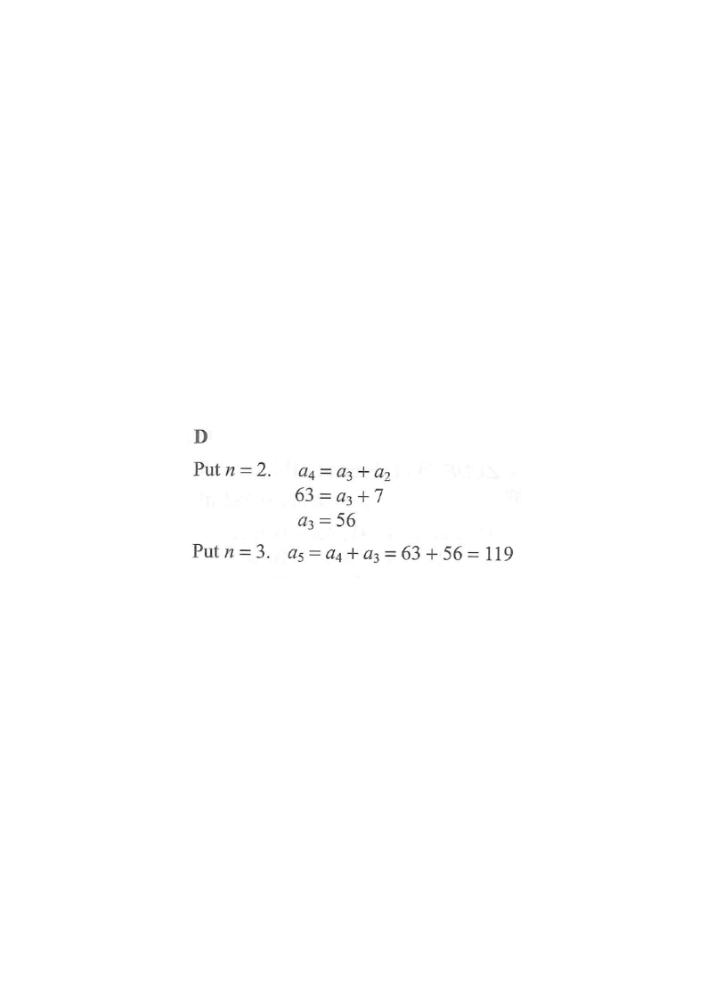

Let \(a_n\) be the \(n\)th term of a sequence. If \(a_2 = 7\), \(a_4 = 63\) and
\[a_{n+2} = a_{n+1} + a_n\]
for any positive integer \(n\), then \(a_5 =\)
A. 56
B. 70
C. 91
D. 119

Figure (original exam diagram)
1Given information & the rule
Recurrence Relation\(a_{n+2}=a_{n+1}+a_{n}\quad (n\ge 1)\)Each term is the sum of the two before it, so \(a_{4}=a_{3}+a_{2}\) links the given \(a_{2}=7\) and \(a_{4}=63\).
We know \(a_2 = 7\) and \(a_4 = 63\), and the recurrence relation
\[a_{n+2} = a_{n+1} + a_n \qquad (n \ge 1).\]
Hint: The relation says each new term is the sum of the previous two terms — so to find any term, look at the two terms before it.
2Find \(a_3\) using \(n=2\)
Working Backwards from a Recurrence Relation\(a_{n}=a_{n+1}-a_{n-1}\)Using \(n=2\), \(a_{3}=a_{4}-a_{2}=63-7=56\), which fills the gap before \(a_{5}\) can be found.
Hint: Now the two preceding terms \(a_3\) and \(a_4\) are both known, so we simply add them.
4Check the sequence
The terms are
\[\ldots,\;a_2=7,\;a_3=56,\;a_4=63,\;a_5=119,\;\ldots\]
Check: \(7 + 56 = 63 = a_4\) ✓ and \(56 + 63 = 119 = a_5\) ✓
Hint: Substituting back into \(a_{n+2}=a_{n+1}+a_n\) confirms the arithmetic is consistent.
AnswerD. 119
PRACTICESimilar question — try it yourself
Question. Let \(b_{n}\) be the \(n\)th term of a sequence. If \(b_{2}=4\), \(b_{4}=18\) and \(b_{n+2}=b_{n+1}+b_{n}\) for any positive integer \(n\), then \(b_{5}=\) A. \(22\) B. \(28\) C. \(32\) D. \(36\) (1 mark)
Show the worked solution
Step 1. Put \(n=2\) in \(b_{n+2}=b_{n+1}+b_{n}\): \(b_{4}=b_{3}+b_{2}\), so \(18=b_{3}+4\).
Step 2. Hence \(b_{3}=18-4=14\).
Step 3. Put \(n=3\): \(b_{5}=b_{4}+b_{3}=18+14=32\).
Step 4. Check: \(4+14=18=b_{4}\) \u2713 and \(14+18=32\) \u2713. Option C.